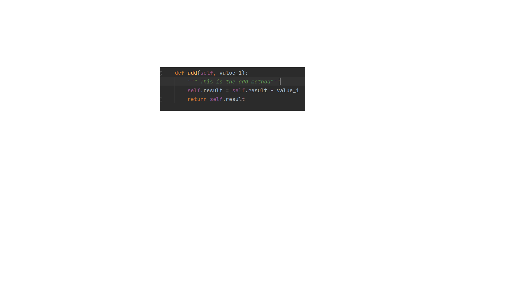
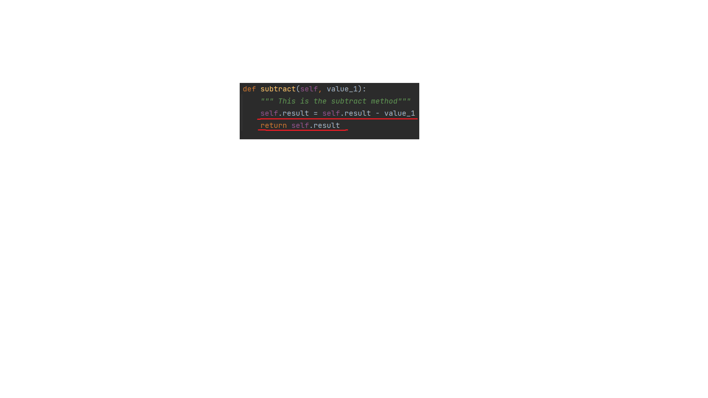

Calculator and it's working on the SOLID principles
Single Responsibility Principle
A class should have on and only one reason to change, meaning that a class should only have one job
in the calculator a class such as a function of addition,subtraction or multiplication is built only to do one function and one function only. Meaning that the addition class CANNOT be used for any other specific function.
Open-Closed Principle
Objects or entities should be open for extension but closed for modification.
In the calculator the the functions are stated with return methods, meaning they can be changed, and also removing the if/else statements required for it to function. This can still be modified as per needs.
Liskov Substitution Principle
Let q(x) be a property provable about objects of x of type T. Then q(y) should be provable for objects y of type S where S is a subtype of T
instead of using sum datas or subtraction datas, the calculator uses the return function to recall the data, now this can be a float,double or integer this fullfills the Liskov substitution principle
Interface Segregation Principle
A client should never be forced to implement an interface that it doesn't use, or clients shouldn't be forced fo depend on methods they do not use.
The calculator class consists of the functions "Required" by the clients to be used, there are no extra functions in it which would confuse the user.
Dependency Inversion Principle
Entities must depend on abstractions, not on concretions. It states that the high-level module must not depend on the low-level module, but they should depend on abstractions
{% endblock %}